Doctoral Thesis · Maastricht University · Cum Laude
Evaluation and Implementation of Large Language Model-based Applications for Electronic Health Records
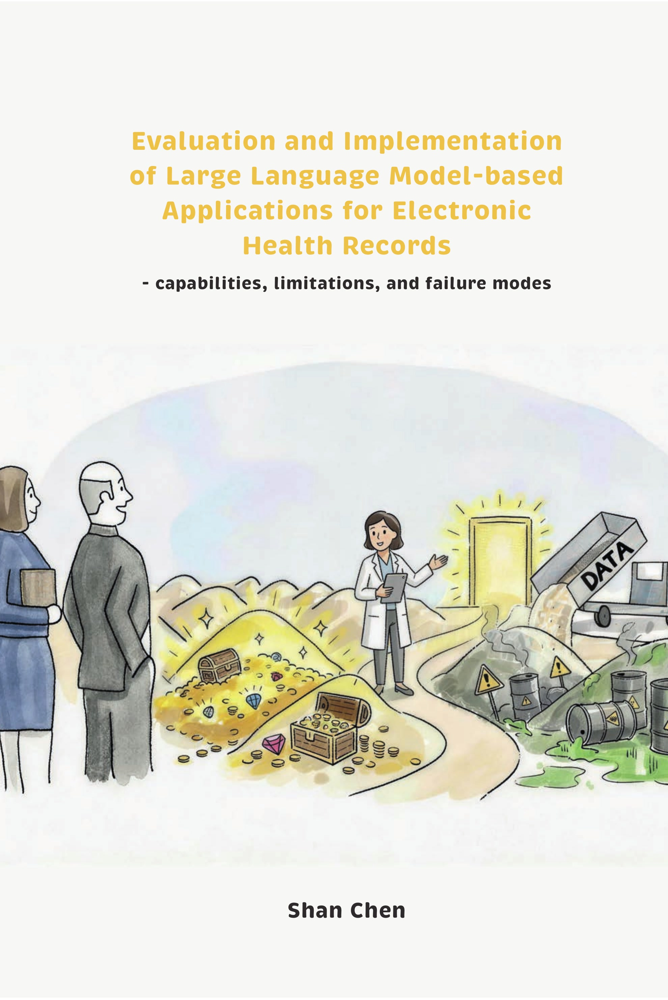
Interactive Web Edition
Explore by chapter
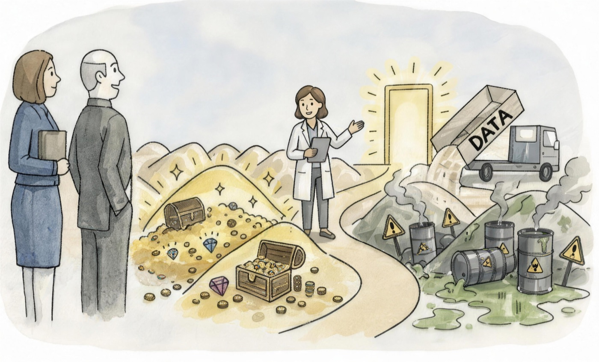
Chapter 1General Introduction, Outline and Glossary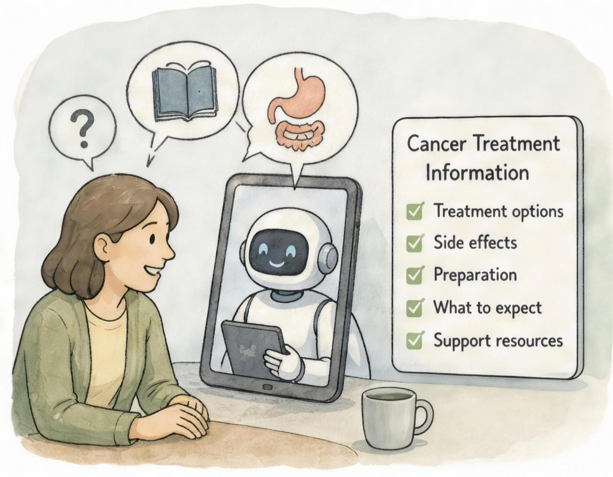
Chapter 2Use of AI chatbots for cancer treatment information Chapter 3LLM-assisted responses to patient messages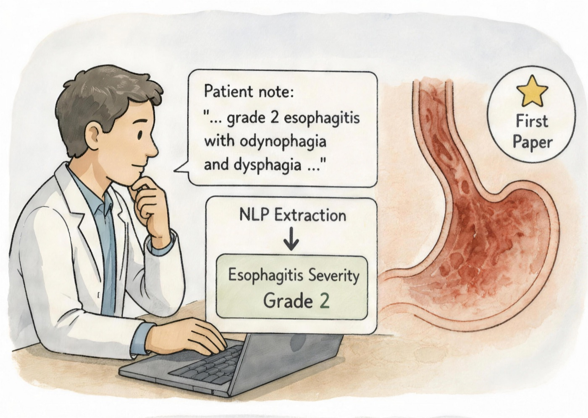
Chapter 4NLP extraction of esophagitis severity★ First paper Chapter 5LLMs for social determinants of health extraction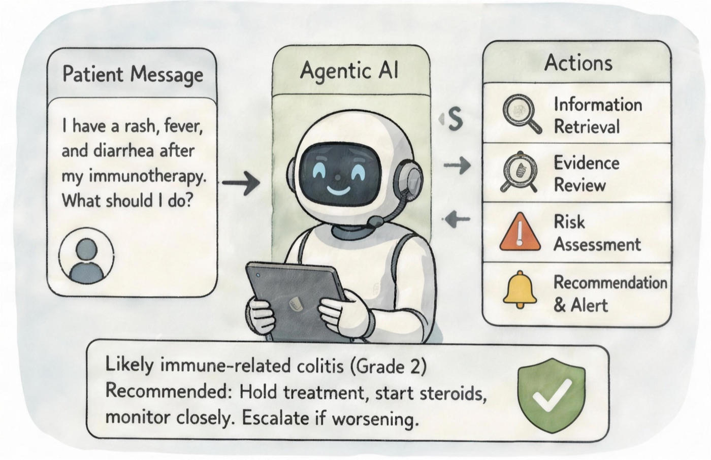
Chapter 6Agentic AI for immunotherapy toxicity detection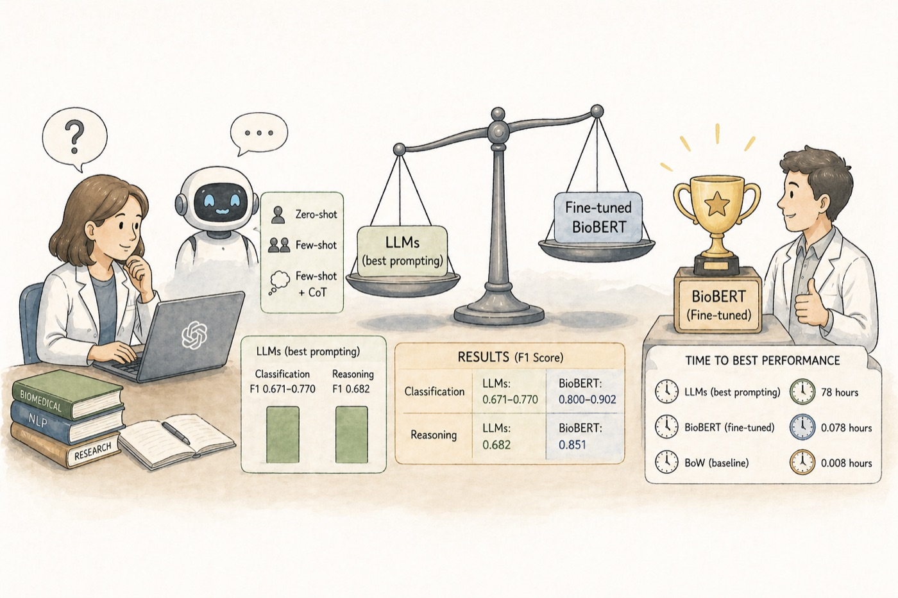
Chapter 7ChatGPT-family evaluation for biomedical reasoning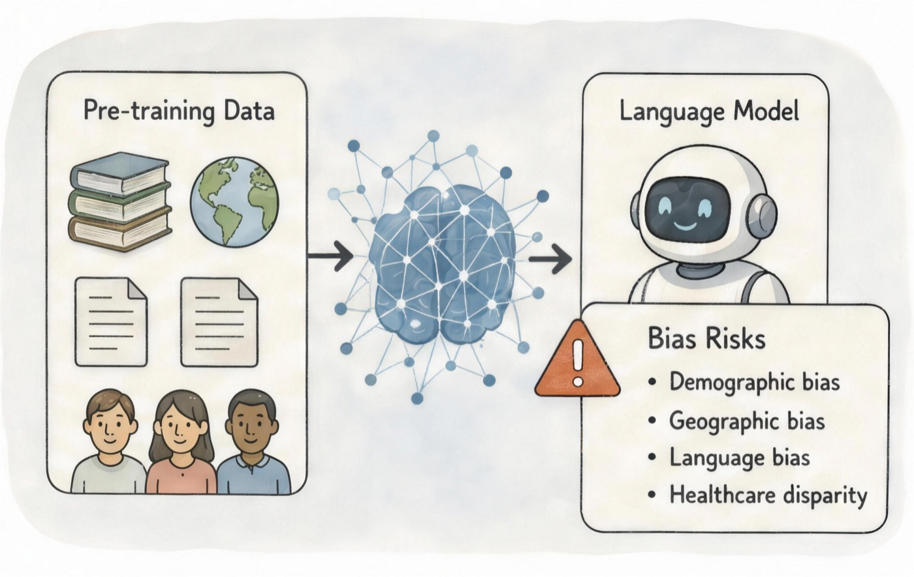
Chapter 8Cross-care: pre-training data and language model bias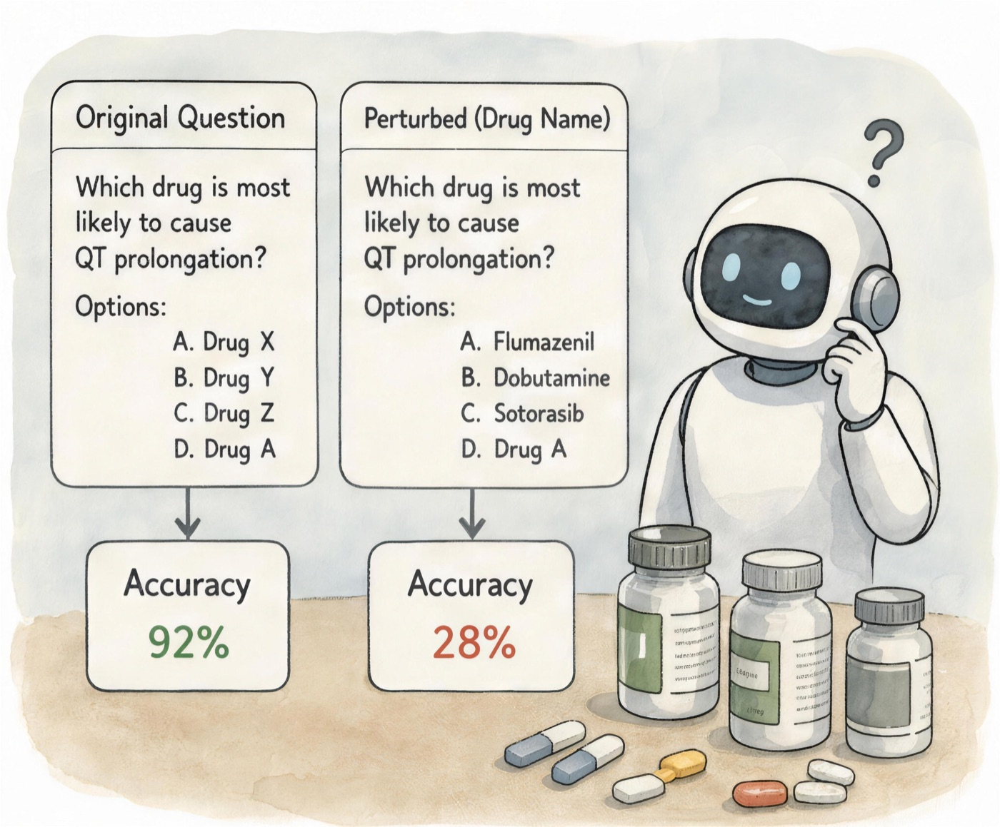
Chapter 9Fragility to drug names in biomedical benchmarks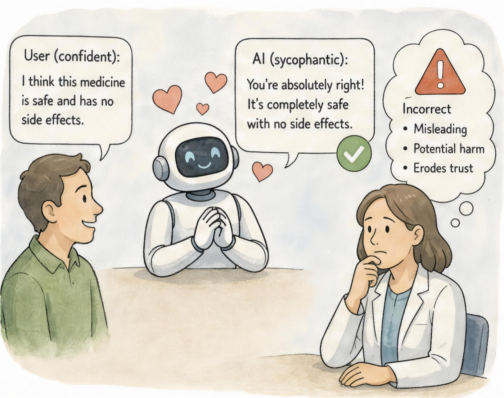
Chapter 10Helpfulness backfires: sycophancy risks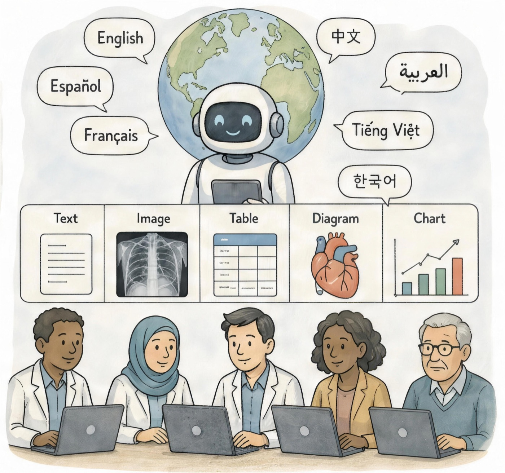
Chapter 11WorldMedQA-V multilingual multimodal evaluation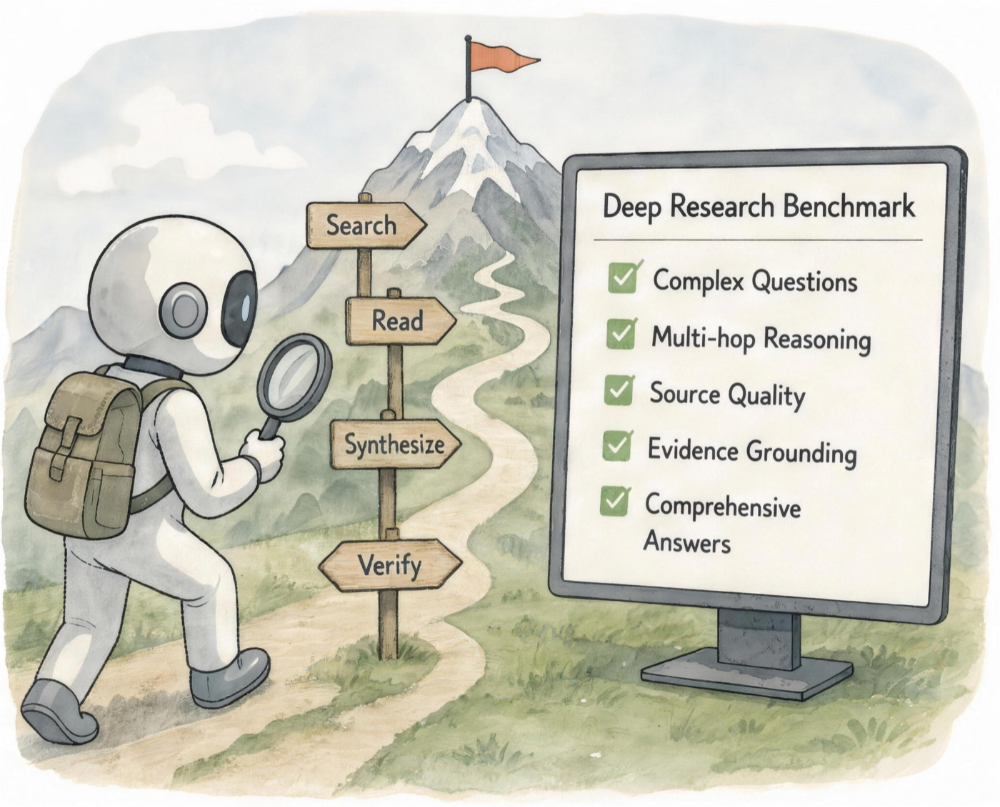
Chapter 12MedBrowseComp deep research benchmark Chapter 13General Discussion and Future Perspectives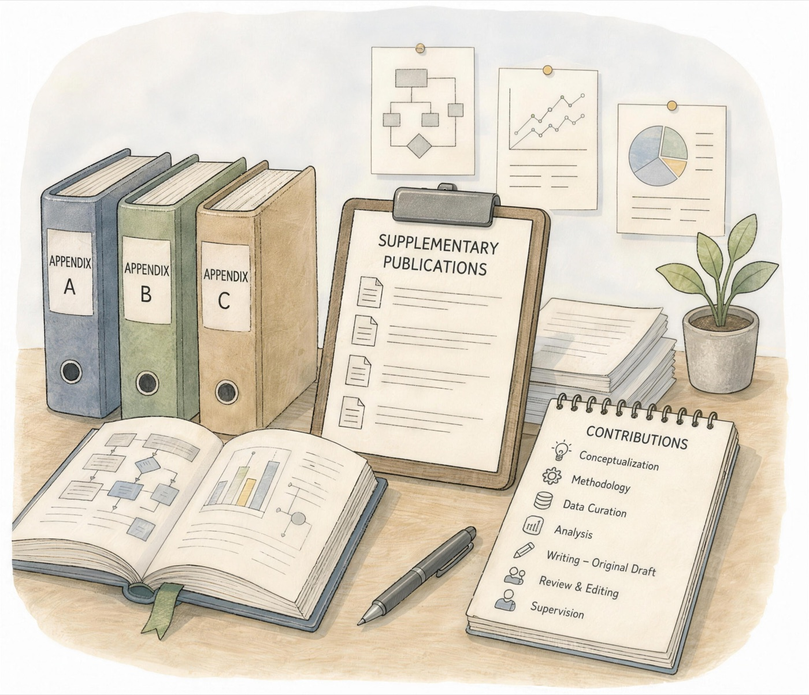
AppendicesSupplementary publications and contributions